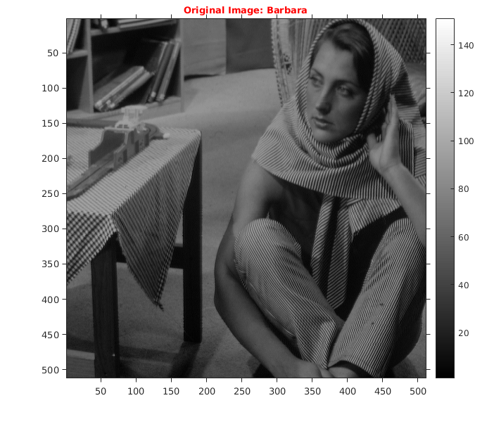

Assignment 2 -- Question 2
CS-663 Group-163059009,16305R011,16305R006
Contents
Intialization
Intializing the Color Map to 150 as max value of intensity in the image file is 100.
file='../data/barbara.mat';
cmap=150;
l = load(file);
img1=l.imageOrig;
Original Image
tic; img=img1; figure('name','Original Image'); imshow(img,colormap(gray(cmap))); title('\fontsize{10}{\color{red}Original Image: Barbara}'); axis tight,axis on; o1 = get(gca, 'Position'); colorbar(),set(gca, 'Position', o1); pause(1);
Bilateral Filtering
myBilateralFiltering function take image, then it corrupt's the image by adding * Guassain nosie * with sigma as 5% of the intensity range . After that, it processes the noisy by the Bilateral filtering. For performing the Bilateral filtering in Spacial and Intensity region it use Gaussian Kernel with below configuration as input:
- Sigma Space: 2
- Sigma Intensity: 28
- Window Size: 31x31
Output: Returns three thing respectively
- Corruted/Noisy image
- Filtered Image
- Spacial Mask
- RMSD of Filtered and Original image.
tic windowSize=31; sigmaSpace=2; sigmaIntensity=28; [corrupted,filtered,spaceMask,rmsError]=myBilateralFiltering(img,cmap,windowSize,sigmaSpace,sigmaIntensity); toc;
Elapsed time is 13.578242 seconds.
Spatial
Showing the Spatial mask with sigma-space as 2
figure('name','Spatial Mask'); imagesc(uint8(spaceMask*cmap)),colormap(gray(cmap)),colorbar(); title('\fontsize{10}{\color{magenta}Spatial}'); pause(2);
Comparison: Tuned parameter
Comparing the result of filtered image with corrupted and original image. RMSD is calculated between Filtered and Original image.

figure('name','Output - barbara','units','normalized','outerposition',[0 0 1 1]); subplot(121); imshow(corrupted,colormap(gray(cmap))); title('\fontsize{10}{\color{red}Corrupted - Barbara}'); axis tight,axis on; o1 = get(gca, 'Position'); colorbar(),set(gca, 'Position', o1); subplot(122); imshow(filtered,colormap(gray(cmap))); title('\fontsize{10}{\color{magenta}Bilateral Filter - Barbara [sigma-space=2],sigma-intesity=28]}'); axis tight,axis on; o1 = get(gca, 'Position'); colorbar(),set(gca, 'Position', o1); pause(3); % Printing result fprintf('\nSigma Space:%d Sigma Intensity:%d RMS of the image:%f\n',sigmaSpace,sigmaIntensity,rmsError);
Sigma Space:2 Sigma Intensity:28 RMS of the image:5.439130
Observation
While tuning sigam-space and sigma-Intesity below are few stats of the tuning. If we reduce the sigma intensity by large amount as compare to sigma-space the RMSD is increase drastically.
i) Comparison: (0.9 x tuned-sigma-space, tuned-sigma-intensity)
tic windowSize=31; sigmaSpace=0.9*2; sigmaIntensity=28; [corrupted,filtered,spaceMask,rmsError]=myBilateralFiltering(img,cmap,windowSize,sigmaSpace,sigmaIntensity); figure('name','Output - barbara','units','normalized','outerposition',[0 0 1 1]); subplot(121); imshow(corrupted,colormap(gray(cmap))); title('\fontsize{10}{\color{red}Corrupted - Barbara}'); axis tight,axis on; o1 = get(gca, 'Position'); colorbar(),set(gca, 'Position', o1); subplot(122); imshow(filtered,colormap(gray(cmap))); title('\fontsize{10}{\color{magenta}Bilateral Filter - Barbara [sigma-space=0.9*2],sigma-intesity=28]}'); axis tight,axis on; o1 = get(gca, 'Position'); colorbar(),set(gca, 'Position', o1); toc pause(3); % Printing result fprintf('\nSigma Space:%d Sigma Intensity:%d RMS of the image:%f\n',sigmaSpace,sigmaIntensity,rmsError);
Elapsed time is 13.546838 seconds. Sigma Space:1.800000e+00 Sigma Intensity:28 RMS of the image:5.354155
ii) Comparison: (tuned-sigma-space, 0.9 x tuned-sigma-intensity)
tic windowSize=31; sigmaSpace=2; sigmaIntensity=0.9*28; [corrupted,filtered,spaceMask,rmsError]=myBilateralFiltering(img,cmap,windowSize,sigmaSpace,sigmaIntensity); figure('name','Output - barbara','units','normalized','outerposition',[0 0 1 1]); subplot(121); imshow(corrupted,colormap(gray(cmap))); title('\fontsize{10}{\color{red}Corrupted - Barbara}'); axis tight,axis on; o1 = get(gca, 'Position'); colorbar(),set(gca, 'Position', o1); subplot(122); imshow(filtered,colormap(gray(cmap))); title('\fontsize{10}{\color{magenta}Bilateral Filter - Barbara [sigma-space=2],sigma-intesity=0.9*28]}'); axis tight,axis on; o1 = get(gca, 'Position'); colorbar(),set(gca, 'Position', o1); toc pause(3); % Printing result fprintf('\nSigma Space:%d Sigma Intensity:%d RMS of the image:%f\n',sigmaSpace,sigmaIntensity,rmsError);
Elapsed time is 19.512797 seconds. Sigma Space:2 Sigma Intensity:2.520000e+01 RMS of the image:5.196094
iii) Comparison: (tuned-sigma-space, 1.1 x tuned-sigma-intensity)
tic windowSize=31; sigmaSpace=2; sigmaIntensity=1.1*28; [corrupted,filtered,spaceMask,rmsError]=myBilateralFiltering(img,cmap,windowSize,sigmaSpace,sigmaIntensity); figure('name','Output - barbara','units','normalized','outerposition',[0 0 1 1]); subplot(121); imshow(corrupted,colormap(gray(cmap))); title('\fontsize{10}{\color{red}Corrupted - Barbara}'); axis tight,axis on; o1 = get(gca, 'Position'); colorbar(),set(gca, 'Position', o1); subplot(122); imshow(filtered,colormap(gray(cmap))); title('\fontsize{10}{\color{magenta}Bilateral Filter - Barbara [sigma-space=2,sigma-intesity=1.1*28]}'); axis tight,axis on; o1 = get(gca, 'Position'); colorbar(),set(gca, 'Position', o1); toc pause(3); % Printing result fprintf('\nSigma Space:%d Sigma Intensity:%d RMS of the image:%f\n',sigmaSpace,sigmaIntensity,rmsError);
Elapsed time is 13.386590 seconds. Sigma Space:2 Sigma Intensity:3.080000e+01 RMS of the image:5.658619